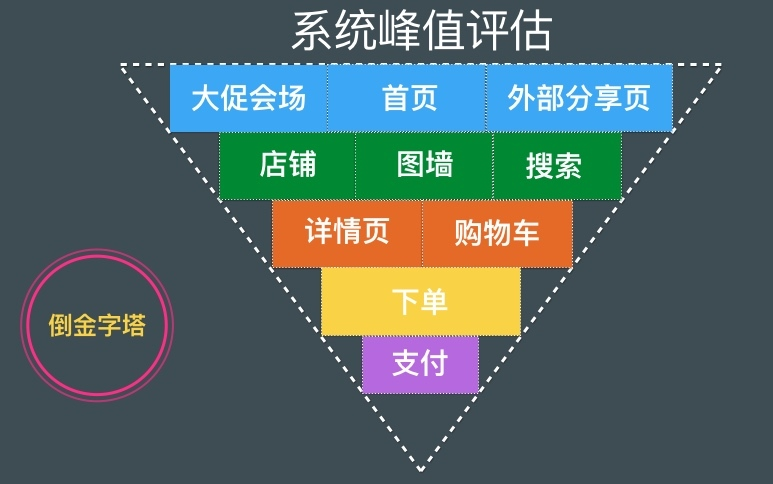

- 00 开篇词 带给你不一样的运维思考.md
- 01 为什么Netflix没有运维岗位？.md
- 02 微服务架构时代，运维体系建设为什么要以应用为核心？.md
- 03 标准化体系建设（上）：如何建立应用标准化体系和模型？.md
- 04 标准化体系建设（下）：如何建立基础架构标准化及服务化体系？.md
- 05 如何从生命周期的视角看待应用运维体系建设？.md
- 06 聊聊CMDB的前世今生.md
- 07 有了CMDB，为什么还需要应用配置管理？.md
- 08 如何在CMDB中落地应用的概念？.md
- 09 如何打造运维组织架构？.md
- 10 谷歌SRE运维模式解读.md
- 11 从谷歌CRE谈起，运维如何培养服务意识？.md
- 12 持续交付知易行难，想做成这事你要理解这几个关键点.md
- 13 持续交付的第一关键点：配置管理.md
- 14 如何做好持续交付中的多环境配置管理？.md
- 15 开发和测试争抢环境？是时候进行多环境建设了.md
- 16 线上环境建设，要扛得住真刀真枪的考验.md
- 17 人多力量大vs.两个披萨原则，聊聊持续交付中的流水线模式.md
- 18 持续交付流水线软件构建难吗？有哪些关键问题？.md
- 19 持续交付中流水线构建完成后就大功告成了吗？别忘了质量保障.md
- 20 做持续交付概念重要还是场景重要？看笨办法如何找到最佳方案.md
- 21 极端业务场景下，我们应该如何做好稳定性保障？.md
- 22 稳定性实践：容量规划之业务场景分析.md
- 23 稳定性实践：容量规划之压测系统建设.md
- 24 稳定性实践：限流降级.md
- 25 稳定性实践：开关和预案.md
- 26 稳定性实践：全链路跟踪系统，技术运营能力的体现.md
- 27 故障管理：谈谈我对故障的理解.md
- 28 故障管理：故障定级和定责.md
- 29 故障管理：鼓励做事，而不是处罚错误.md
- 30 故障管理：故障应急和故障复盘.md
- 31 唇亡齿寒，运维与安全.md
- 32 为什么蘑菇街会选择上云？是被动选择还是主动出击？.md
- 33 为什么混合云是未来云计算的主流形态？.md
- 35 以绝对优势立足：从CDN和云存储来聊聊云生态的崛起.md
- 36 量体裁衣方得最优解：聊聊页面静态化架构和二级CDN建设.md
- 37 云计算时代，我们所说的弹性伸缩，弹的到底是什么？.md
- 38 我是如何走上运维岗位的？.md
- 39 云计算和AI时代，运维应该如何做好转型？.md
- 40 运维需要懂产品和运营吗？.md
- 41 冷静下来想想，员工离职这事真能防得住吗？.md
- 42 树立个人品牌意识：从背景调查谈谈职业口碑的重要性.md
- 划重点：赵成的运维体系管理课精华（一）.md
- 划重点：赵成的运维体系管理课精华（三）.md
- 划重点：赵成的运维体系管理课精华（二）.md
- 新书 《进化：运维技术变革与实践探索》.md
- 特别放送 我的2019：收获，静静等待.md
- 结束语 学习的过程，多些耐心和脚踏实地.md
22 稳定性实践：容量规划之业务场景分析
上期文章我们从整体上介绍了极端业务场景下，如何做好稳定性保障工作。今天，我们结合电商大促这个场景，来看一下容量规划这项工作。
稳定性保障的一个难点是我们要面对一个非常复杂的因素，那就是业务模型，或者叫用户访问模型。因为它的不确定性，会衍生出很多不同的业务场景，而不同的场景，就会导致我们的应对策略有所不同。
所以，容量规划，就是对复杂业务场景的分析，通过一定的技术手段（如压力测试），来达到对资源合理扩容、有效规划的过程。
容量规划的场景分析
我们一直在讲，不能脱离业务场景空谈技术，所以我们还是先从电商大促这个业务场景入手来分析。
对于电商来说，核心链路就是交易链路。简单来说，就是用户要能登录，然后能通过浏览商品详情页下单订购，或者加购物车，通过购物车进行订购结算，这个过程中还要进行各种优惠的批价处理，库存的判断等等，形成订购之后，最终还要能够支付成功，一个完整的交易支付流程才算走完。
在大促的峰值时刻，场景可能又有不同，因为绝大部分用户选购什么商品，早已加入到了购物车中，且各种优惠券也已经申领成功，就等着最后这个时间点直接下单完成订购。所以，在大促这个场景下，交易下单这个环节是核心中的核心。
因为这个时间点的交易流量实在是太高了，所以近两年电商也改变了一些玩法，其目的就是希望减少峰值流量，让流量在整个大促阶段更加均匀。具体的运营和玩法细节这里就不详细介绍了。
那么，我们要应对的场景就相对清晰了，就是在大促零点峰值时刻，评估好交易流量，再进一步转化一下，就是每秒的交易订单峰值。
下图就是我们进行评估的路径分析示例，用户首先从首页、大促会场或者微信里的分享页面转化过来，然后通过搜索、店铺、详情页以及购物车进行最后的转化，形成订购下单和最终的支付。

具体数值的评估上，我们会跟产品运营团队共同讨论，整体的业务目标由运营团队给出，比如GMV目标收入，UV、PV、转化率、客单价以及商品单价，这些都是业务目标。通过这些业务数据，我们根据上图的路径逐步分解，就会逐步得出每一层的流量数据。
假设大促会场会有500万UV，根据GMV和客单价，如果要完成目标，推导出到详情页的转化率需要达到60%（产品运营需要努力达成这个业务目标），那详情页的UV就是300万；根据用户访问行为分析，对详情页的各个应用产生的QPS再做一个评估，这样单个应用的容量值就有了，然后再进一步向下转化，能够形成订购，形成加购物车的又有多少，再进行评估，最后就可以得出一个交易下单的峰值以及支付的峰值。
计算出峰值后，还要与历年评估的峰值数据，以及实际的峰值数据进行对比，根据对比情况进行调整。评估出来的这个峰值，就是系统要承诺支撑的容量，因为只有达到这个容量值，才能支撑业务完成对应的业务目标。
总结来说，这就是一个根据业务GMV、UV等目标，对技术上的交易下单峰值这个核心指标进行推导的过程。
那么，接下来就根据评估的各个应用和基础服务需要承担的流量，先扩容一轮，同时开始构造数据模型和压测模型来模拟真实流量，以此验证我们的系统是否能够达标，过程中再进行局部的扩容和优化。
一般来说，先进行单链路压测，比如购物车订购，详情页订购等场景的压测，达标后再进行多链路压测，最后再进行全链路压测，直至达成目标。为了能够保有一定的容量缓冲，最后几轮压测，我们会将压测流量调整到目标值的120%或150%，来保证系统能够应对足够极端的场景，这样才能够游刃有余地实现100%的目标。
构造压测的数据模型
如何构造压测的数据模型呢？这是一个比较复杂的问题，因为我们靠拍脑袋或者靠猜，是无法准确评估的。通常情况下，我们从以下两方面入手。
一方面，数据模型要接近真实场景。这就需要我们不断地积累经验，记录早期大促的详细数据和真实场景（比如不同用户购物车里的商品数量、优惠策略、不同渠道比例等，以及各种运营活动的玩法），这样可以最大程度地模拟真实的用户访问模型。这个过程，蘑菇街更多的还是手工推导，像阿里做得比较极致，可以通过BI系统，将往年模型和当年模型进行分析比对，直接生成对应的数据模型，甚至是多套模型。
另一方面，数据量要接近真实场景。数据量有很多维度，比如用户数量、商品数量、店铺数量、优惠券数量等等。这里一般会通过数据工厂这样的工具平台，结合运营团队给出的数据量评估，快速制造出对应量级的数据。另一种方式就是从线上将真实数据，进行敏感信息脱敏处理后，导出到另一张影子表中，专门提供给压测使用，这样做的好处是不会污染线上运行数据。
总结
通过上面的分享，我们应该不难发现，容量规划工作，单纯靠技术能力是无法解决的，需要经验和数据的积累，到了阿里这个体量就必须借助人工智能和各类分析算法这样更高级的手段才能解决。
同时，容量问题，也不是简简单单通过资源扩容这种成本投入就可以解决的，扩容是最后的执行手段，但是怎么合理的、科学的扩容，就需要有合理的规划。当业务体量和复杂度到达一定程度时，就要依靠技术人员对业务的深入理解。能够合理规划业务、技术和数据模型，是需要一些经验积累，以及在各类极端场景下的经历。
最后，如此复杂的技术体系，也只有在同样复杂的场景下才会被催生出来，才会有存在意义。所以，我们在学习借鉴时，还是要从各自的实际场景出发，慢慢积累，大可不必强求短期速成。
你自己是否有过容量规划的经历？遇到过哪些问题？欢迎你留言与我讨论。
如果今天的内容对你有帮助，也欢迎你分享给身边的朋友，我们下期见！
© 2019 - 2023 Liangliang Lee. Powered by gin and hexo-theme-book.